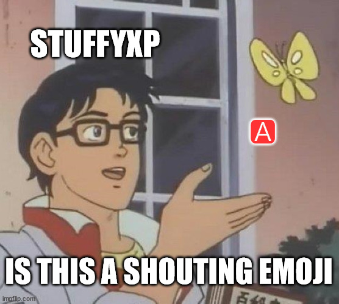

A Emoji
🅰️, officially named A Button (Blood Type), is one of the many emojis on the Internet. Its primary design consists of the A letter on a red background. A Button (Blood Type) was approved as part of Unicode 6.0 in 2010 and added to the Emoji 1.0 in 2015.
It is one of the earliest Horibyte memes, introduced in December 2023¹, along with Horibyte Moments. Initially regarded by Horibyte as a “shouting emoji”, the A Button emoji has since became popular among Horifans, and over time variations of it have been made by Horibyte or others.

Gallery of Fanmade 🅰️s
An A drawn by Horibyte in Windows 1.0, during the Upgrade Saga II
An A made by Horibyte. Origin unknown. Originated from a Mastodon post.

An A made by Horibyte to mock Meta/Facebook's own A emoji design
One side of the A building from the original Horicraft.
¹↑ Horibyte has claimed that they have used the 🅰️ emoji on a separate server in that date.